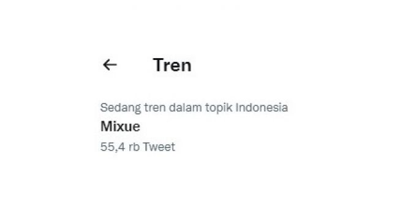
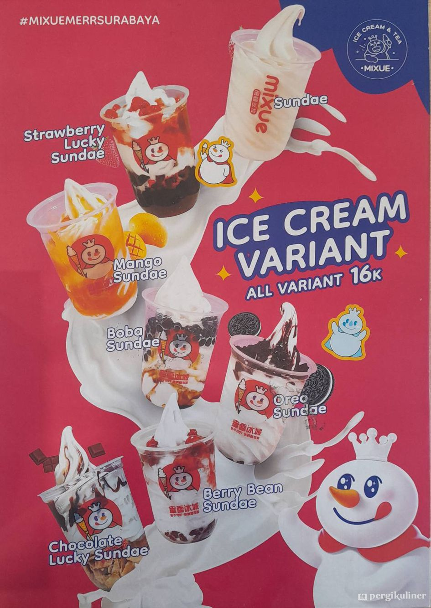
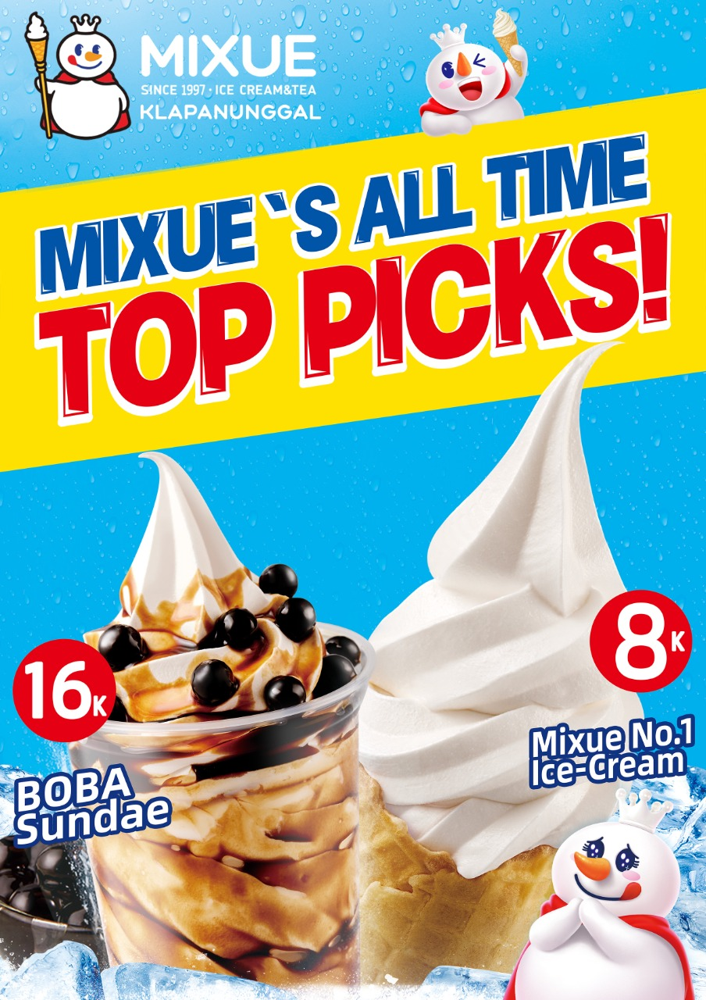

mixue.com- Mixue adalah salah satu waralaba yang menjual es krim dan minuman teh asal China. Di Indonesia sendiri, brand tersebut cukup mudah ditemukan di pinggir jalan ataupun pusat belanja seperti mall. Pesatnya perkembangan cabang Mixue tersebut menjadi topik hangat yang dibicarakan di media sosial. Bahkan Mixue kini terpantau menduduki
Trending Topic Twitter Indonesia.
Kata kunci Mixue saat ini telah dicuitkan sebanyak lebih dari 55.400 tweet oleh sesama pengguna Twitter.
Browser tidak mendukung tag vidio
iklan

Mixue menjadi Trending Topic Twitter Indonesia pada hari ini, Rabu (28/12/2022). (screenshot)
Melalui kata kunci tersebut, tak sedikit warganet yang membagikan tweet jenaka. Beberapa warganet lainnya bahkan mengunggah gambar peta persebaran cabang Mixue di daerahnya yang seolah menginvasi kota
"Kalian kalau ke Bandung bakal muak tiap beberapa meter pasti ada Mixue. Udah kayak Indomaret di mana-mana ada," tambah @azlaa_
"Hati jangan dibiarin kelamaan kosong, kuatir nanti jadi kios Mixue," cuit @handokotjung "Kenapa Mixue nggak coba buka cabang di dalem bank, kan banyak banget orang antri daripada bete pasti nanti mereka beli es krimnya. Lumayan peluang bisnis," tulis @cursedkidd


Selain itu, warganet lain juga menyamakan Mixue dengan minuman Kelp Shake yang pernah muncul dalam SpongeBob SquarePants. Dalam kartun lawas tersebut, kedai Kelp Share tiba-tiba menjamur di Bikini Bottom dan mengalahkan Krusty Krab.